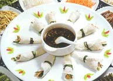
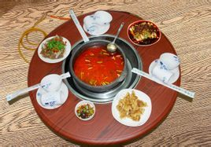
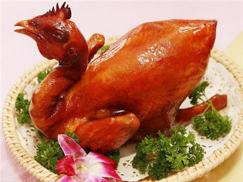
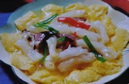
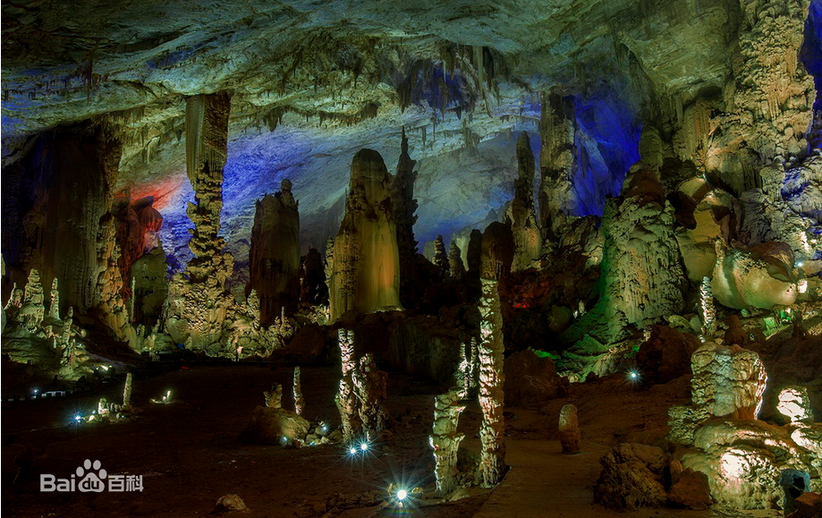

文化:
截至2014年末，贵州省共有艺术表演团体39个，群众艺术馆、文化馆98个，公共图书馆94个，档案馆107个，博物馆、纪念馆75个，艺术表演场所6个，乡镇综合文化站1564个。年末，有线电视用户379.54万户。全省广播综合人口覆盖率和电视综合人口覆盖率分别提高到91.5%和95.4%。图书出版社6个，音像出版社1个，印刷复制企业685个；全年图书出版量6090.64万份，杂志出版量1598.28万份。
美食文化: 贵州菜又称黔菜，由贵阳菜、黔北菜和少数民族菜等数种风味组成。
贵州文化
地理环境
贵州地貌属于中国西南部高原山地，境内地势西高东低，自中部向北、东、南三面倾斜，平均海拔在1100米左右。贵州高原山地居多，素有“八山一水一分田”之说。
全省地貌可概括分为：高原、山地、丘陵和盆地四种基本类型，其中92.5%的面积为山地和丘陵。境内山脉众多，重峦叠嶂，绵延纵横，山高谷深。贵州的气候温暖湿润，属亚热带湿润季风气候。气温变化小，冬暖夏凉，气候宜人。
下面是旅游景点介绍
贵州美食小吃 贵阳丝娃娃正宗酸辣粉 
毕节美食 王傻子烧鸡
芙蓉蹄筋
联系我们
QQ:1591631526
电话号码:15542014819点击返回
织金洞  织金洞被评为“中国最美六大旅游洞穴”之首；“中国最美的旅游胜地——“中国十大奇洞”之首。中科院下辖的《中国国家地理》等国家级地理研究部门也给予高度赞誉，称其为 ¿ñ “中国溶洞之王”，“黄山归来不看岳，织金洞外无洞天！”